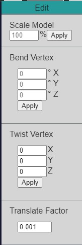

About
OrthoFreeD is a web-based 3D modeling program built specifically for orthotic professionals.
Our team consists of seven software engineers and one team lead, all of whom are computer science majors at Portland State University. We developed this software for Gaffney Orthotics, who is the sponsor of our senior capstone project.
This page contains information about the features available with OrthoFreeD and how you can use them.
Getting Started
Importing Files
OrthoFreeD supports only STL and OBJ files for import and export.
To upload a file to the editor, click on the "Upload File" button in the toolbar. A window will open allowing you to choose the STL or OBJ file you want to edit.
Exporting Files
Once you are ready to save your file, you can export your model by hovering over the "Export file" button in the toolbar.

Choose your file format from the dropdown that appears, then click "Export File". The file will be automatically downloaded by your browser to a default location. You can change this location in your browser settings.
Selection
You can access the selection menu by clicking on the "Select" button in the toolbar.
The menu contains three checkboxes allowing you to toggle between different modes of selection. In vertex selection mode, you can click on any individual vertex to select it. In section selection mode, you can click and drag to select an area of vertices. In cross section mode, you click on the model to place two lines denoting the boundary of your selected area. To remove a line you placed in cross section mode, you can right click.
The "Select" button in the toolbar also has a checkbox allowing you to quickly toggle selection mode on and off.
View Controls
Zoom
The zoom function changes the camera perspective to be closer or farther from the model. One way you can access the zoom feature is through the "View" button on the toolbar. In the View menu, there is a "Zoom" button where you can see + and - buttons.
The second way you can access zoom controls is through the + and - keys on the keyboard.

Perspective
One way you can adjust the camera position is by adjusting the manual controls located in the camera controls menu. The camera controls can be accessed by clicking on the camera button in the toolbar.
From this menu you can adjust the XYZ position of the camera, as well as the pitch, yaw, and roll.
Another way to adjust the camera position is by checking the "Move camera" box in the toolbar. When this button is checked, you can change the camera position by clicking and dragging over the canvas.
Fullscreen
You can view your model in fullscreen by clicking on the "Fullscreen" option located in the "View" menu.
Editing Tools
Scale
You can scale the model if you would like to internally alter the size of the model in the file. To scale the model, click on the "Edit" button in the toolbar, and under "Scale Model" you can enter the scaling percentage.
Vertex Manipulation
The edit menu also has a few other tools for translating and bending selected vertices.
From this menu you can enter numeric units to twist or bend vertices on each axis.
You can also set the "Translate Factor" which controls how much vertices are translated using the arrows.
Other
Re-center
The re-center icon on the toolbar can be used to reset the camera perspective back to the center of the canvas.
Undo / Redo
You can undo and redo your recent changes with the arrow buttons on the far left side of the toolbar.